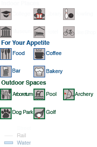

A Local's Guide to Northfield
Historic Northfield:
A Local's Guide to Cows, Colleges, and Contentment
What to do, where to dine, and where to stay in Northfield, MN
Key:
By: Brooke Harding
UW Madison Cartography/GIS
G572 November 2013
(Icons appear as user increases zoom level)
